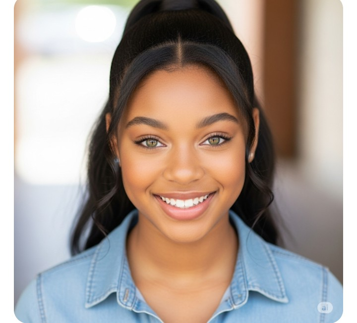
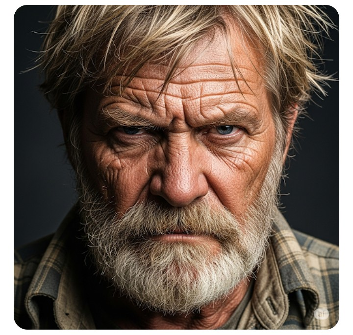
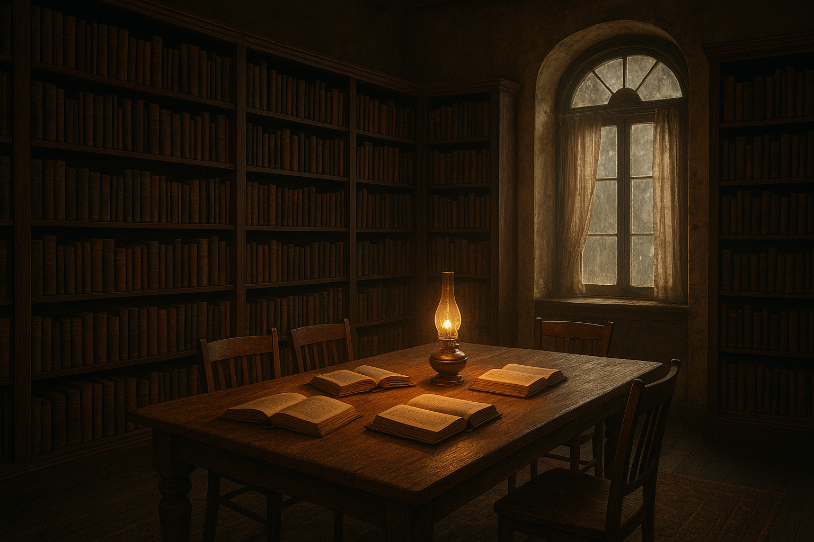

The Weight Of Secrets
The air in the rural Georgia town hung heavy and sweet with the scent of honeysuckle, but for Renee, it was just the oppressive weight of a past she never knew. 
Her father, Isaiah, had died six months ago, and her mother, Nadia, had decided to move them back to her hometown, a place she had fled with a young Renee in her arms.
At 16, Renee felt like a ghost in her own life, haunted by a father-sized hole and surrounded by a landscape that felt both deeply personal to her mother and utterly foreign to her.
Paige, on the other hand, was a fixture of the town.
She lived in a large, peeling farmhouse with her grandfather, Oscar, a man whose presence was as rigid and unyielding as the old oak trees in their yard. 
Oscar was a retired Grand Dragon of the Ku Klux Klan. While the robes were long gone, the hatred and bitterness were not. Paige's father had been killed when she was a baby, and her mother, consumed by grief, had taken her own life by the time Paige was three. Oscar had raised her ever since, filling her world with his venomous ideology. But Paige had a spirit of her own, one that rebelled against his every word. She saw the ugliness in his heart and felt a profound shame and revulsion for his views.

Renee and Paige met one afternoon at the library, drawn together by a shared sense of otherness.
They talked for hours, finding a quick, easy rapport that neither had ever known. A friendship blossomed, an oasis of simple joy in their complicated lives. They spent every moment they could together, their secret alliance a shield against the world. They explored the dusty backroads, swam in the creek, and shared their deepest fears and dreams—all while carefully avoiding Paige's home and Oscar’s watchful, hateful eyes.
One sweltering afternoon, they were at Renee’s house, laughing and listening to music, when Nadia came home from work.
She smiled at the sight of them, pulling a chair over to join them. The easy conversation turned to family, and Paige, her face open and trusting, mentioned her grandfather's name: Oscar. The name dropped into the room like a stone. Nadia's face went ashen, and the light in her eyes was extinguished, replaced by a deep, harrowing sadness. She began to tell them a story, her voice shaking.
She told them that Oscar's son, Paige’s father, had been a monster. He and a group of friends had kidnapped and raped her behind a church. Isaiah, her boyfriend at the time, and some church members had found them. In the ensuing brawl, the police had arrived, and Paige's father and two of his friends were killed. The town, and especially Oscar, had never forgotten. Nadia and Isaiah moved away soon after, and she soon discovered she was pregnant. It wasn't until this moment that she revealed the rest of the dark secret: Isaiah wasn't the father. The baby was the result of the rape, but Nadia, her faith unshakeable, refused to have an abortion. Isaiah had loved the child, Renee, as his own, and they had raised her as their daughter, keeping the true identity of her father a secret. The real father was Paige's.
A few weeks later, Oscar, in a rare trip to town, saw Nadia leaving the grocery store.
The sight of her sparked a memory of pure hatred and vengeance. He decided to find out where she lived and who she was with, and it didn't take him long to discover her daughter, Renee, and that she had befriended his own granddaughter, Paige. He saw an opportunity for revenge, to take away her child the way he believed she had taken his son.
He waited in the dark that night, hidden in the bushes outside Renee’s house. As she walked up to the porch, he stepped out and fired, the shot echoing into the night before he sped away in his truck. Nadia rushed out, drawn by the sound, and found Renee bleeding and dying. She screamed, her heart shattering as she held her daughter’s fading life in her arms. Blinded by grief, she got in her car and sped towards Oscar’s home, her clothes covered in Renee’s blood.
Paige heard the screech of tires and ran outside.
She saw Nadia, screaming and hysterical, and asked what was wrong. "He killed her!" Nadia screamed, her voice a raw, jagged sound. "Oscar killed Renee. I followed him here!" Oscar emerged from the house, a shotgun in his hands, his face contorted with rage as he cursed and yelled, "I'm protecting my property!" As he was distracted, Paige's eyes landed on a shovel. She grabbed it, and in one fluid motion, swung it at the back of his head. He dropped, and the shotgun clattered to the ground. Paige picked it up.
Tears streaming down her face, Paige told him that she knew what her father had done, that he had raped Nadia and that's why he was killed. She then told him the truth that he had been so blind to see: Renee was her half-sister. That was why they moved, because Nadia kept the baby and raised her with Isaiah, a man who loved her unconditionally, unlike the evil man Oscar was. Oscar began to weep, begging for her forgiveness, but Paige just shook her head. With a trembling finger, she pulled the trigger, shooting him to death before dropping the gun.